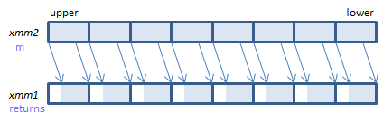
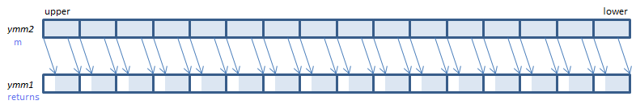
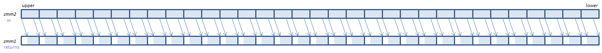

PSRAW - Packed Shift Right Arithmetic Word
PSRAW xmm1, imm8 (S2 the number of bits is specified by imm8.
__m128i _mm_srai_epi16(__m128i m, int count) the number of bits is specified by count.
PSRAW xmm1, xmm2/m128 (S2 the number of bits is specified by the lower QWORD of xmm2/m128.
__m128i _mm_sra_epi16(__m128i m, __m128i count) the number of bits is specified by the lower QWORD of count
For each WORD, shift the bits to the right by the specified number of bits. Emptied upper bits are filled with the initial sign bit.
VPSRAW xmm1, xmm2, imm8 (V1 the number of bits is specified by imm8.
__m128i _mm_srai_epi16(__m128i m, int count) the number of bits is specified by count.
VPSRAW xmm1, xmm2, xmm3/m128 (V1 the number of bits is specified by the lower QWORD of xmm3/m128.
__m128i _mm_sra_epi16(__m128i m, __m128i count) the number of bits is specified by the lower QWORD of count.
VPSRAW xmm1{k1}{z}, xmm2/m128, imm8 (V5+BW+VL the number of bits is specified by imm8.
__m128i _mm_mask_srai_epi16(__m128i s, __mmask8 k, __m128i m, unsigned int count) the number of bits is specified by count.
__m128i _mm_maskz_srai_epi16(__mmask8 k, __m128i m, unsigned int count) the number of bits is specified by count.
VPSRAW xmm1{k1}{z}, xmm2, xmm3/m128 (V5+BW+VL the number of bits is specified by the lower QWORD of xmm3/m128.
__m128i _mm_mask_sra_epi16(__m128i s, __mmask8 k, __m128i m, __m128i count) the number of bits is specified by the lower QWORD of count.
__m128i _mm_maskz_sra_epi16(__mmask8 k, __m128i m, __m128i count) the number of bits is specified by the lower QWORD of count.

For each WORD, shift the bits to the right by the specified number of bits. Emptied upper bits are filled with the initial sign bit.
VPSRAW ymm1, ymm2, imm8 (V2 the number of bits is specified by imm8.
__m256i _mm256_srai_epi16(__m256i m, int count) the number of bits is specified by count.
VPSRAW ymm1, ymm2, xmm3/m128 (V2 the number of bits is specified by the lower QWORD of xmm3/m128.
__m256i _mm256_sra_epi16(__m256i m, __m128i count) the number of bits is specified by the lower QWORD of count.
VPSRAW ymm1{k1}{z}, ymm2/m256, imm8 (V5+BW+VL the number of bits is specified by imm8.
__m256i _mm256_mask_srai_epi16(__m256i s, __mmask16 k, __m256i m, unsigned int count) the number of bits is specified by count.
__m256i _mm256_maskz_srai_epi16(__mmask16 k, __m256i m, unsigned int count) the number of bits is specified by count.
VPSRAW ymm1{k1}{z}, ymm2, xmm3/m128 (V5+BW+VL the number of bits is specified by the lower QWORD of xmm3/m128.
__m256i _mm256_mask_sra_epi16(__m256i s, __mmask16 k, __m256i m, __m128i count) the number of bits is specified by the lower QWORD of count.
__m256i _mm256_maskz_sra_epi16(__mmask16 k, __m256i m, __m128i count) the number of bits is specified by the lower QWORD of count.

For each WORD, shift the bits to the right by the specified number of bits. Emptied upper bits are filled with the initial sign bit.
VPSRAW zmm1{k1}{z}, zmm2/m512, imm8 (V5+BW the number of bits is specified by imm8.
__m512i _mm512_srai_epi16(__m512i m, unsigned int count) the number of bits is specified by count.
__m512i _mm512_mask_srai_epi16(__m512i s, __mmask32 k, __m512i m, unsigned int count) the number of bits is specified by count.
__m512i _mm512_maskz_srai_epi16(__mmask32 k, __m512i m, unsigned int count) the number of bits is specified by count.
VPSRAW zmm1{k1}{z}, zmm2, xmm3/m128 (V5+BW the number of bits is specified by the lower QWORD of xmm3/m128.
__m512i _mm512_sra_epi16(__m512i m, __m128i count) the number of bits is specified by the lower QWORD of count.
__m512i _mm512_mask_sra_epi16(__m512i s, __mmask32 k, __m512i m, __m128i count) the number of bits is specified by the lower QWORD of count.
__m512i _mm512_maskz_sra_epi16(__mmask32 k, __m512i m, __m128i count) the number of bits is specified by the lower QWORD of count.

For each WORD, shift the bits to the right by the specified number of bits. Emptied upper bits are filled with the initial sign bit.
x86/x64 SIMD Instruction List
Feedback